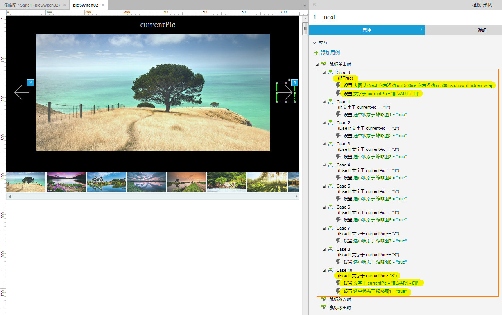

实现原理
步骤
-
新建两个动态面板，分别命名为：大图、缩略图，放对应的大图和缩略图；
新建一个矩形并命名：currentPic，用于存储当前图片的值；
新建两个形状，分别命名为：pre、next； -
在大图动态面板中新建8个面板状态，每个状态中放置一张大图；
-
- 在缩略图动态面板中放所有的缩略图，并为每个缩略图分别命名为：缩略图1、缩略图2、...、缩略图8；
- 为所有缩略图设置选中状态；
- 为所有缩略图设置选项组名称：缩略图（为了点击缩略图时，每次只能选中一个）
- 单击某个缩略图时（假使此缩略图序号为4），设置其选中状态为true; 并设置大图（动态面板）的面板状态与缩略图的序号一致，即也为4；设置 currentPic = 4 （currentPic 用于存储当前图片的序号）
-
初始截入时：大图（动态面板）默认显示第一张图（即第一个面板状态中的图）；设置缩略图（动态面板）的第一张为选中状态；设置 currentPic = 1

-
点击next时，根据currentPic的值做以下设置（因为currentPic取值范围为1~8，所以会有8种情况），假设currentPic当前值为2：
- 大图（动态面板）向右滑动到下一个面板状态，即第3个面板状态；
- 将 currentPic 的值增1，即 currentPic = 3；
- 设置序号为3的缩略图的选中状态为true；
当 currentPic 的值为 1~8时，均按如上设置，但是当 currentPic > 8 （即在最后一张图时点击next）时，情况不同于上面，需要按如下设置：
- 设置序号为1的缩略图的选中状态为true；
- 设置 currentPic = 1
设置缩略图的选中状态：
设置大图（动态面板）的面板状态：
设置 currentPic 的值 ：
当 currentPic > 8 时，重置 currentPic = 1（图中的写法：LVAR1 = currentPic, currentPic = LVAR1 - 图片总数(8)，效果和 currentPic = 1 是一样的）
-
点击pre时，根据currentPic的值做以下设置（因为currentPic取值范围为1~8，所以会有8种情况），假设currentPic当前值为5：
- 大图（动态面板）向左滑动到上一个面板状态，即第4个面板状态；
- 将 currentPic 的值减1，即 currentPic = 4；
- 设置序号为4的缩略图的选中状态为true；
当 currentPic 的值为 1~8时，均按如上设置，但是当 currentPic < 1 （即在第一张图时点击pre）时，情况不同于上面，需要按如下设置：
- 设置序号为8的缩略图的选中状态为true；
- 设置 currentPic = 8
设置缩略图的选中状态：
设置大图（动态面板）的面板状态：
设置 currentPic 的值 ：

当 currentPic < 1 时，重置 currentPic = 8（图中的写法：LVAR1 = currentPic, currentPic = LVAR1 + 图片总数(8)，效果和 currentPic = 8 是一样的）
-
完成